РАЗРАБОТКА КОНФИГУРАЦИИ
ДЛЯ УЧЕТА РАБОТЫ СТУДЕНТОВ
НА ЗАНЯТИЯХ
Сложность: *
Теги: справочник, документ, регистр накопления, схема компоновки данных, условное оформление
ЗАДАНИЕ
Заказчик просит разработать конфигурацию для учета работы студентов на занятиях. Учет ведется в разрезе дисциплин.
1. В системе необходимо регистрировать Занятия студентов. В конце занятия пользователь в шапке документа указывает название дисциплины, а в табличной части – какие студенты какой балл получили.
2. Нужно построить
Отчет по текущей успеваемости
студентов.
Форма отчета:
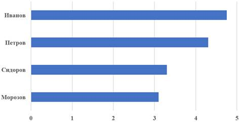
Отчет строится по среднему арифметическому баллу студента по указанной дисциплине.
Подготовка
q Создать новую информационную базу.
q Открыть информационную базу в режиме «Конфигуратор».
q Открыть окно конфигурации.
Подробнее о том, как это сделать, смотрите в Лабораторной работе № 2 (стр. 17).
Выполнение
«Заказчик просит разработать конфигурацию для учета работы студентов на занятиях. Учет ведется в разрезе дисциплин».
Из условия следует, что необходимо хранить информацию о студентах и посещаемых ими дисциплинах. Для решения этой задачи нам понадобятся справочники.
Определение
Справочник – это объект конфигурации, который хранит справочную информацию, например, перечень товаров или список сотрудников (более подробно про справочники можно прочитать здесь: https://v8.1c.ru/platforma/spravochniki/).
Создадим справочник «Студенты».
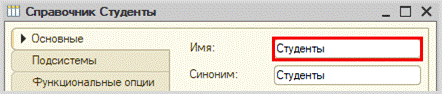
Создадим справочник «Дисциплины».
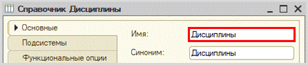
Откроем программу в режиме «1С:Предприятие» и добавим в каждый справочник несколько элементов.
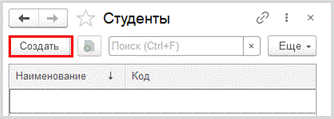
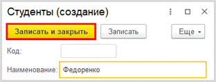
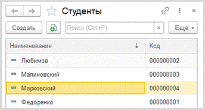
Аналогично добавьте несколько элементов в справочник «Дисциплины».
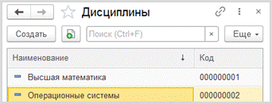
«В системе необходимо регистрировать Занятия студентов».
Для регистрации занятий студентов следует воспользоваться объектом конфигурации документ.
Определение
Документ – это объект конфигурации, хранящий информацию о каких-либо событиях, произошедших в «жизни» предприятия. Например, с помощью документа можно зарегистрировать (то есть сохранить данные документа для последующей обработки) продажу товаров или начисление зарплаты (подробнее про документы можно прочитать здесь: https://v8.1c.ru/platforma/dokumenty/).
Добавим новый документ «ЗанятияСтудентов».
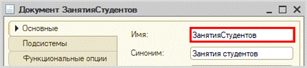
Для настройки структуры документа переходим на вкладку «Данные».
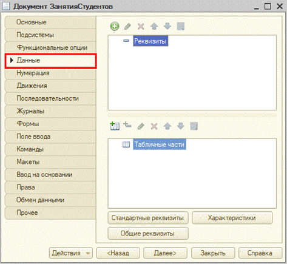
«В конце занятия пользователь в шапке документа указывает название дисциплины, а в табличной части – какие студенты какой балл получили».
Под шапкой документа подразумеваются данные, хранящиеся в верхней части документа до табличной части.
Добавим реквизит «Дисциплина».
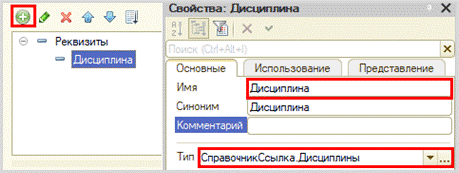
Сделаем реквизит обязательным для заполнения.
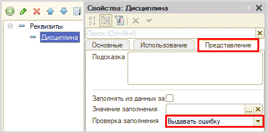
С помощью такой настройки пользователь не сможет сохранить документ, пока не заполнит поле «Дисциплина».
Далее, исходя из условия, нам понадобится добавить табличную часть.
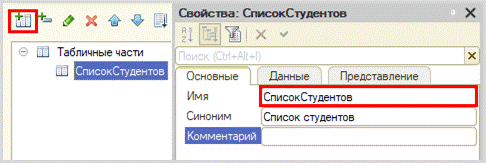
Теперь добавим два реквизита табличной части: «Студент» (тип – СправочникСсылка.Студенты) и «Оценка» (тип – «Число»).
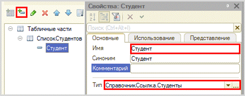
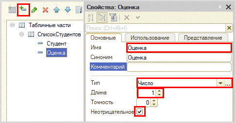
Запустим режим «1С:Предприятие» и попробуем создать несколько документов.
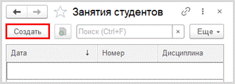
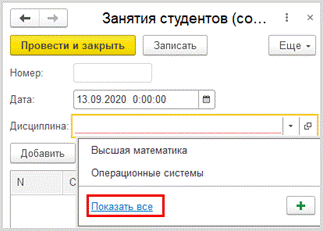
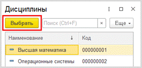
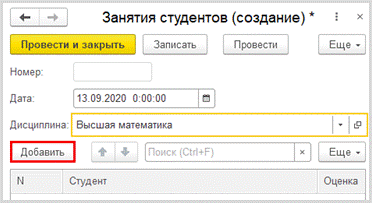
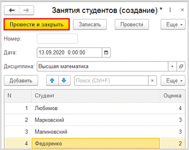
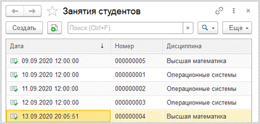
Можно ли теперь на основе таких документов построить отчет об успеваемости? Можно, но для этого придется прибегнуть к грубому перебору всех существующих документов. Данный вариант является неправильным, потому что, если таких документов окажется очень много, система будет требовать большого количества ресурсов и времени.
Для решения данной проблемы и
ускорения процесса извлечения данных создадим еще один объект – регистр накопления.
Определение
Регистр накопления – это такая итоговая таблица, которая может автоматически считать какие-либо элементы, например, денежные средства, материалы (дополнительно про регистры накопления можно прочитать здесь: https://v8.1c.ru/platforma/registr-nakopleniya/).
Добавим новый регистр накопления
«УспеваемостьСтудентов». Вид данного регистра – «Обороты».
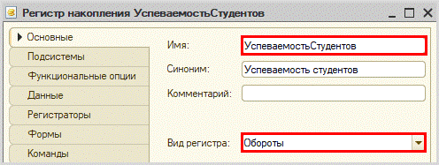
Как и в случае с документами, для формирования структуры переходим на вкладку «Данные».
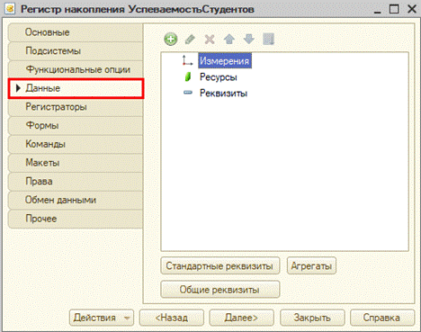
Структура регистра накопления отличается от структуры документа.
Заполнение данного окна проще всего начинать с добавления ресурса. Чтобы понять, что использовать в качестве ресурса, следует задать вопрос: «Что мы хотим накапливать/считать в данном регистре?». Мы хотим считать оценки. Следовательно, оценка и будет являться ресурсом. Тип данного реквизита – «Число».
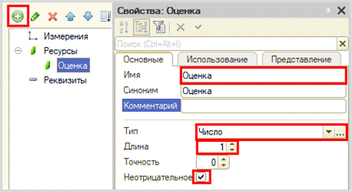
Чтобы разобраться с измерением, необходимо понять, в разрезе чего мы хотим считать оценки. Мы хотим считать оценки (кого?) студентов в разрезе (чего?) дисциплин. Значит, в качестве измерений нужно добавить реквизиты «Студент» (тип – «СправочникСсылка.Студенты») и «Дисциплина» (тип – «СправочникСсылка.Дисциплины»).
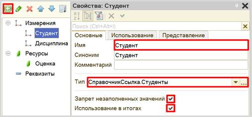
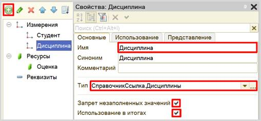
Чтобы регистр накопления заработал, необходимо сделать следующее:
1. Определить источники данных регистра (определить документы-регистраторы).
2. Описать, каким образом данные из документа-регистратора должны попадать в регистр.
В нашем случае на оценку студента будет влиять единственный документ. Определим его в качестве документа-регистратора на вкладке «Регистраторы».
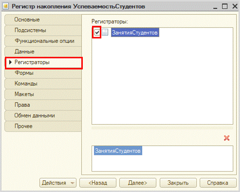
Далее для нашего документа необходимо описать процедуру копирования данных в регистр накопления.
Откроем окно редактирования данного документа на вкладке «Движения». Воспользуемся конструктором движений.
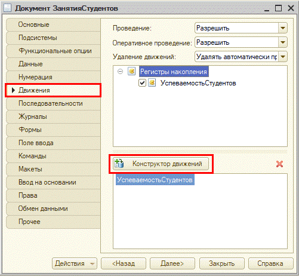
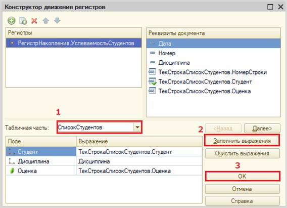
Окно конструктора движений состоит из нескольких областей:
q Левая верхняя область позволяет переключаться между регистрами (один документ может делать движения сразу в несколько разных регистров).
q Правая верхняя область описывает реквизиты документа-регистратора. Чтобы отобразить в данной области реквизиты табличной части нужно выбрать ее в соответствующем поле.
q В нижней части окна описаны реквизиты регистра накопления. Нужно заполнить поле «Выражение» реквизитами документа.
Если все было сделано правильно, имена и типы реквизитов совпадают, то при нажатии на кнопку «Заполнить выражения» реквизиты регистра заполнятся автоматически. Если этого не произошло, то заполните поле «Выражение» вручную, путем выбора соответствующих реквизитов документа.
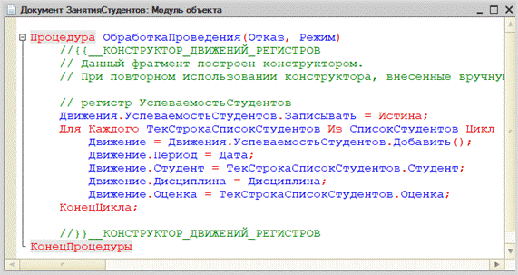
При нажатии на кнопку «ОК» система сформирует программный код, который при успешном проведении документа произведет движения в регистр накопления, то есть скопирует данные из документа в регистр накопления.
Откроем систему в режиме «1С:Предприятие» и проверим работу регистра накопления.
В первую очередь, необходимо перепровести (провести заново) созданный документ «Занятия студентов». Без проведения документов данные не будут скопированы в регистр накопления.
Обратите внимание, что на главной странице система не создала кнопку открытия регистра накопления. Это связано с тем, что все расчеты в регистрах накопления происходят в фоновом режиме, «за кадром», то есть пользователю о них знать не нужно вовсе. Поэтому по умолчанию регистры накопления настраивают так, чтобы пользователи не имели к ним доступа.
Но мы, будучи разработчиками, можем обратиться к любому объекту конфигурации. Для этого воспользуемся функциями для технического специалиста.
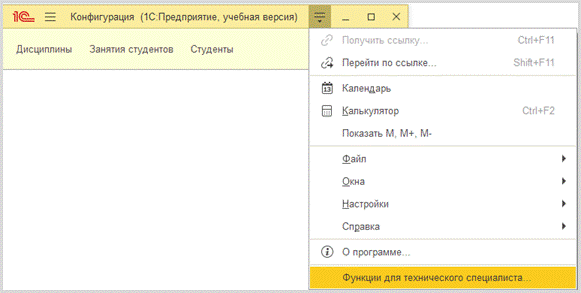
В открывшемся списке найдем созданный нами регистр накопления и откроем его.
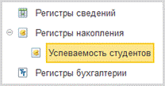
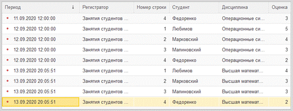
Таким образом, регистр накопления является некоторой итоговой таблицей. Сюда заносятся данные из документов-регистраторов по определенным правилам.
Мы реализовали движение информации об оценках студентов для последующего расчета среднего балла.
«Необходимо построить Отчет по текущей успеваемости студентов».
Построим отчет. Для этого воспользуемся соответствующим объектом конфигурации.
Определение
Отчет – это такой объект конфигурации, который формирует данные в понятном для пользователя виде, например, в виде таблицы или диаграммы (подробнее про отчеты можно прочитать здесь: https://v8.1c.ru/platforma/otchet/).
Добавим отчет «УспеваемостьСтудентов». Воспользуемся схемой компоновки данных.
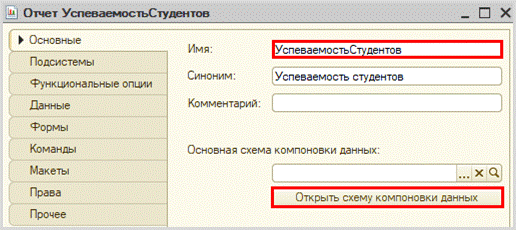

Добавим новый запрос к базе данных.
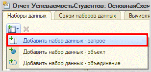
Для формирования запроса воспользуемся конструктором запроса.
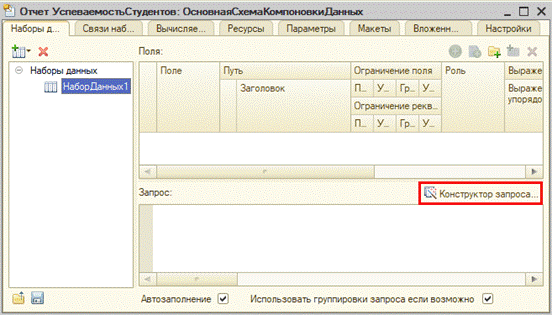
Открывается конструктор запроса. Эта вкладка имеет три части:
q Часть слева отображает все объекты конфигурации, имеющиеся в нашей базе данных. Нужно выбрать лишь те объекты, из которых мы хотим получать данные.
q Посередине находятся таблицы – это выбранные нами объекты, откуда мы хотим получать данные для конкретного отчета.
q Справа поля – это те значения (поля), которые мы хотим увидеть в отчете.
Данные будем брать из регистра накоплений напрямую, чтобы иметь возможность рассчитывать средний балл.
Чтобы перенести данные из одного окна в другое, просто перетащите нужные поля с помощью мыши либо воспользуйтесь стрелочками, расположенными между окнами.
В результате данное окно должно быть заполнено следующим образом:
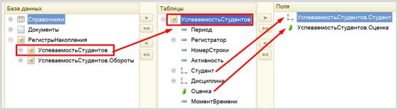
Чтобы иметь возможность получать различные отчеты в зависимости от выбранной дисциплины – перейдем на вкладку «Условия».
Перетащите измерение «Дисциплина» в правую область открывшегося окна и убедитесь, что условие выглядит так же, как на картинке, при необходимости исправьте вручную.
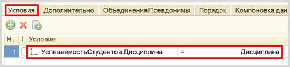
Чтобы отчет получился красивым – установим псевдоним для
поля «Оценка» и завершим составление запроса. Для этого следует перейти на
вкладку «Объединения и псевдонимы» и изменить имя поля с «Оценка» на
«СреднийБалл». Для этого дважды
щелкните по имени, должна появиться возможность для редактирования имени.
После изменения псевдонима данное окно должно быть заполнено следующим образом:
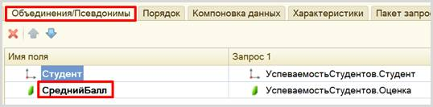
Нажмите на кнопку
«ОК». Система должна сформировать следующий запрос:
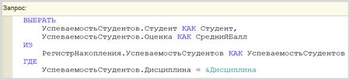
Следующим этапом будет расчет среднего балла для студента.
Для этого перейдем на вкладку «Ресурсы» и установим поле «СреднийБалл» в качестве ресурса. Данное поле должно высчитываться по следующему выражению:
Окр(Среднее(СреднийБалл), 2)
С помощью метода «Окр(*, 2)» мы сможем округлить полученное выражение до сотых.
Кроме того, следует указать, что ресурс должен рассчитываться по студенту.
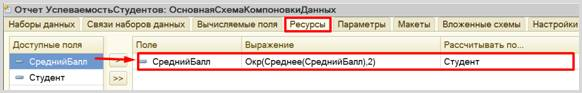
Далее на вкладке «Параметры» нам нужно отключить (снять галочку) ограничение доступности выбора дисциплины в отчете.
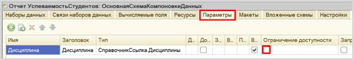
Теперь переходим на вкладку «Настройки» для оформления внешнего вида отчета.
Воспользуемся конструктором настроек отчета.
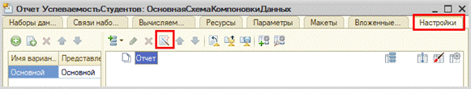
Построим отчет в виде горизонтальной диаграммы.
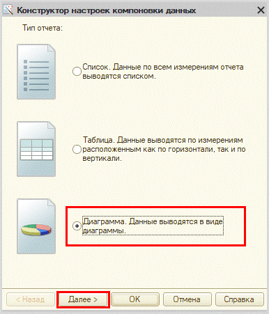
На данном этапе нужно выбрать поля, которые будут отображаться в отчете.
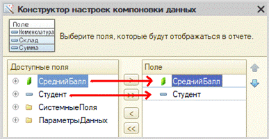
Нажмите на кнопку «Далее».
Теперь нужно определить оси X и Y нашей будущей диаграммы: ось X – это точки, Y – серии. Пусть по оси Y будет указан средний балл, а по оси X – студенты.
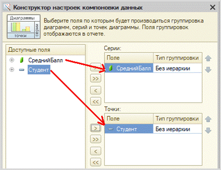
Нажмите на кнопку «Далее».
Чтобы сделать список студентов в отчете по алфавиту – добавим упорядочивание по полю «Студент».
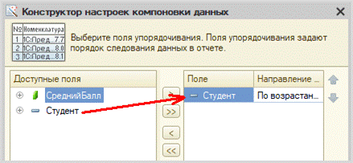
Нажмите на кнопку «Далее».
Среди приложенных вариантов диаграмм нужно выбрать вариант «Гистограмма горизонтальная».
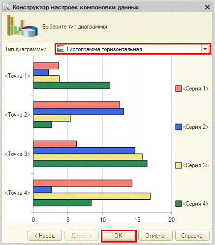
Чтобы у пользователя была возможность выбирать дисциплину, по которой он хочет построить отчет, необходимо включить параметр «Дисциплина» в пользовательские настройки.
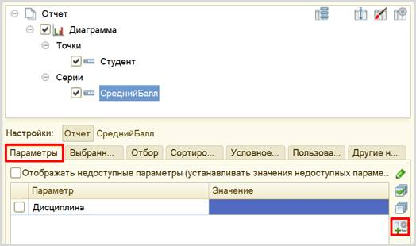
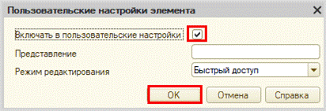
Используем условное оформление для того, чтобы сделать отчет более понятным для пользователя. Для этого следует открыть вкладку «Условное оформление». Здесь можно задать оформление, которое будет применено к отчету или его части, когда происходит определенное событие. Добавьте новое условное оформление.
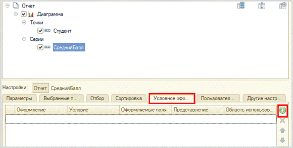
Сначала нужно выбрать оформление. Мы будем выделять различными цветами состояние успеваемости студентов.
В открывшемся окне нас интересует свойство «Цвет в диаграмме». Установим флажок и выберем значение цвета.
Чтобы различать успеваемость студентов будем использовать четыре цвета:
q Зеленый – для отличников;
q Оранжевый – для хорошистов;
q Желтый – для троечников;
q Красный – для двоечников.
Мы добавили оформление для отличников (RGB: 51, 153, 102 – зеленый цвет). Аналогичным образом добавьте еще три оформления: для хорошистов, троечников и двоечников.
Заключительным этапом будет установка для каждого оформления условия, поскольку в зависимости от разного среднего балла шкала должна окрашиваться разными цветами. Начнем с первого оформления для отличников.
Нужно настроить отбор по среднему баллу. Добавим новый отбор.
В качестве левого сравниваемого значения выберем поле «СреднийБалл».
Вид сравнения установим в значение «больше или равно».
В качестве правого значения выберем значение 4,5.
Чтобы в дальнейшем понимать, для кого сформировано условие – установим представление «Отличник».
После чего нажмем на кнопку «ОК».
Таким образом, мы настроили условие для первого оформления.
Далее заполните остальные условия по аналогии.
Хорошист:
Троечник:
Двоечник:
Результат должен получиться следующим:
Отчет готов. Запустим систему в режиме «1С:Предприятие».
В зависимости от выбранной дисциплины будет меняться отчет.
Поставленная задача решена.